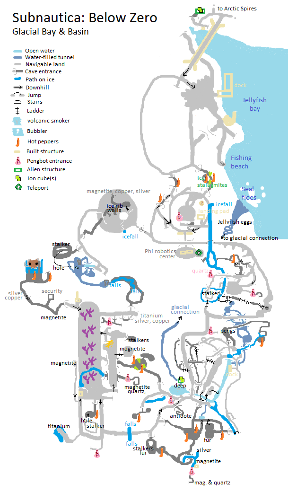

Subnautica: Below Zero
on Windows, published 2021. 
Subnautica, and its icy sequel, "Below Zero", have perhaps been my favorite games of the last few years. The majority of their run time takes place under the colorful waters of an alien ocean. It's been a joy to sit side-by-size with Zander for tense scuba cave dives, or piloting vehicles through vertiginous underwater cave systems, headlights straining through the murk to reveal wonders. It has inspired cake.
Part of the games take place on land though. I started drawing a map of Below Zero's Glacial Basin region just to keep track of where we'd been. To make sure we visited all the locations, found all the MacGuffins (I'm looking at you, pesky antidote), and experienced all that there was to experience.
But as those goals approached completion, I finished drawing it because it had become a therapeutic experience. Happily exploring away, mesmerised by the scenery, avoiding hostile wildlife, uncovering the ruins of ancient alien artifacts. Reckoning distances by eye, scribbling down what we found, updating and correcting the map as we went. Being lost in the experience. Simply a joy.
Reddit is encouraging me to tackle the tricky Actic Spires area, too. <Rubs hands>...
